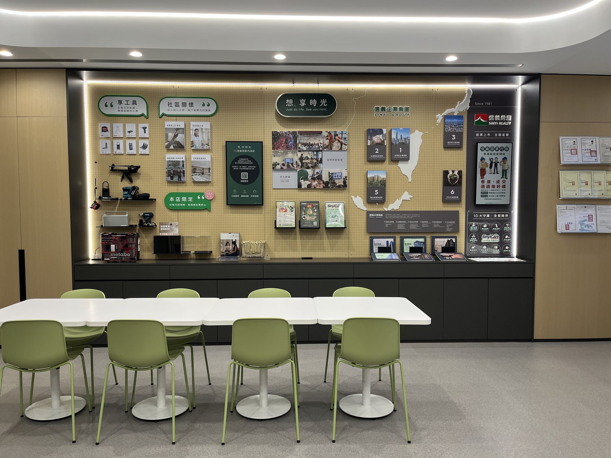

各店有自己的屋況，團隊有共同的交接方式
分店先提出營運需求和現場限制，設計小組再把需求轉成圖面與發包規格。工程與採購依同一版本核對施工範圍、材料、數量和預算，完工後把驗收與修正紀錄留在店別履歷。
Howard 與分店、設計小組、工程、採購及合作廠商協作，銜接工程需求、物料標準和採購作業。兩份規格書署名為轉型辦公室設計小組 Howard 與 Lucy。

店面優化 SOP
依分店檔案架構與專案文件整理，展開各階段查看交接重點。
01 確認需求與現況
分店提供營運需求、現況照片與既有設備資訊。設計與工程勘查丈量，盤點保留、拆改及須確認的室裝條件。
交接資料 簽呈、現況照片、量測圖與室裝資料。
02 確認設計與發包規格
設計小組用平面配置、設計規格和品牌識別圖說說明工項。分店確認使用需求，工程核對尺寸、施工界面與現場限制，採購取得可逐項詢價的版本。
交接資料 確認版圖說、規格書與發包範圍。
03 比價與發包確認
採購與工程先核對報價版本，再按工項、數量、原單位、規格及責任範圍比對。出現刪項、移列或工日異動時，先釐清由誰負擔及有無追加風險。
交接資料 逐項比價、待確認清單與核定預算。
04 施工追蹤與變更
工程和廠商對齊施工圖與進度。巡檢表和施工照片對應工項。遇到現況與圖面不符，由工程、設計及採購確認改法、工期及費用影響，並記錄更新版本。
交接資料 施工圖、進度表、巡檢表、施工照片與變更紀錄。
05 驗收與分店移交
分店與工程按品項對照規格、現場與驗收單。缺失記下位置、責任與複驗結果，完工照和驗收資料回存店別，供維修與後續改造查找。
交接資料 驗收單、缺失複驗與完工照片。
一店一份工程履歷
以區、店名與店代碼辨識分店，例如「業15_新店總站-R592」。店別資料夾用固定分類存放文件，施工照片再依原始、施工中、完工分階段留存。
- 簽呈
- 室裝資料
- 設計規格
- 工程履歷資料
- 驗收標準
- 預算
執行據點
共執行 16 個據點，已完工 10 個，進行中 6 個。
已完工 10 個
- 台中國美
- 高雄河堤
- 鳳山鳳頂
- 民生健康
- 天母
- 中山吉林
- 復興仁愛
- 古亭
- 泰山十八甲
- 北投捷運
進行中 6 個
- 內湖文德
- 板橋代書
- 桃園青埔A18
- 桃園八德
- 桃園國際
- 新北投